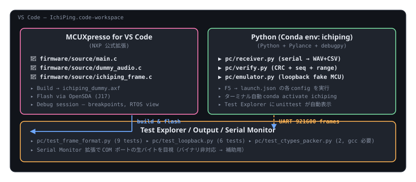

ワークスペース全体像

0. 事前準備
| 必要なもの | 確認コマンド | 無ければ |
|---|---|---|
| VS Code 1.85+ | code --version | 公式からインストール |
| Miniconda / Anaconda | conda --version | Miniconda 推奨。確認済の置き場: C:\ProgramData\anaconda3\ など |
| Git | git --version | — |
| MCUXpresso SDK for FRDM-MCXN947 | SDK Builder で取得 | mcuxpresso.nxp.com |
| OpenSDA ドライバ (Windows のみ) | デバイスマネージャに OpenSDA - CDC Serial Port | NXP opensda-driver |
1. リポを開く
git clone https://github.com/airpocket-soundman/IchiPing.git
cd IchiPing
code .VS Code が .vscode/extensions.json を検出し、右下に「Do you want to install the recommended extensions?」と聞いてくる。Install All をクリック。
同梱されている設定
| ファイル | 役割 |
|---|---|
.vscode/extensions.json | 推奨拡張リスト（Python / Pylance / debugpy / MCUXpresso / Cortex-Debug / C++ / Jupyter / YAML / Hex Editor） |
.vscode/settings.json | Python テスト発見、analysis paths、フォーマッタ、Files/Watcher 除外 |
.vscode/launch.json | F5 から receiver/verify/emulator/unittest を実行するための 7 構成 |
2. Conda 環境を作る／引き継ぐ
2.1 まだ環境が無い場合（新規作成）
VS Code の統合ターミナル（Ctrl+`）を開いて:
conda env create -f pc/environment.yml
# → 'ichiping' という名前の env が作られる（数 GB のダウンロード、10〜15 分）
conda activate ichipingconda env create --dry-run -f pc/environment.yml を実行して exit 0 になることを Windows 上で確認済（conda-forge から pytorch 2.10 / onnx 1.21 / onnxruntime 1.25 等が解決される）。pyroomacoustics は PyPI 経由なので pip: サブセクションに置いてある。
2.2 既存環境を別マシンに引き継ぐ場合
環境の中身（バージョン pin 込み）を export → 別マシンで再現する手順:
# 旧マシン側で固定したい完全な状態を吐き出す
conda activate ichiping
conda env export --no-builds > pc/environment-lock.yml
# 新マシン側で復元
conda env create -f pc/environment-lock.yml
--no-builds を付けると Linux/macOS/Windows 間でも比較的そのまま動く（CUDA ビルドの違いはあり得る）。完全 pin したい場合は --no-builds を外す。
2.3 Pip 追加分を export したい場合
# conda + pip の両方を保存
conda env export > pc/env-conda.yml
pip freeze > pc/env-pip.txt3. VS Code から Conda 環境を選ぶ
- Ctrl+Shift+P →
Python: Select Interpreter - リストから
Python 3.11.x ('ichiping')を選ぶ — Conda 拡張が自動検出 - 右下のステータスバーに
{} Python 3.11.x ('ichiping')と表示されれば OK
3.1 ターミナル起動時の自動 activate
.vscode/settings.json で python.terminal.activateEnvironment: true を設定済。
新しい統合ターミナルを開くと自動で conda activate ichiping が走る。
プロンプトの先頭に (ichiping) と付くことで確認できる。
3.2 動かない場合のフォールバック
初回だけ手動で:
conda init powershell # PowerShell 用フック登録
# VS Code を再起動 → ターミナルが自動 activate するようになるそれでもダメなら .vscode/settings.json の以下のコメントアウト行を有効化し、自分の Anaconda パスに合わせる:
// "python.defaultInterpreterPath": "C:/ProgramData/anaconda3/envs/ichiping/python.exe"4. MCU 側 — firmware のビルド・書込
MCUXpresso for VS Code 拡張 (nxp-mcuxpresso.mcuxpresso) を使う:
- 左サイドバーの MCUXpresso アイコンをクリック
- Import Repository →
frdmmcxn947SDK を選択 - Import Example →
driver_examples/lpuart/polling_transferをベースにichiping_dummyプロジェクト作成 - 生成された
main.cを firmware/projects/01_dummy_emitter/main.c で置き換え - ichiping_frame.c と dummy_audio.c を
source/に追加 - Include path に
${workspaceFolder}/firmware/shared/includeを追加 - Build ボタン（または Ctrl+Shift+B）
- USB ケーブル接続後、Debug アイコン → OpenSDA で書込
詳細手順とトラブルシュートは firmware/README.html と bringup.html 参照。
5. PC 側 — F5 で receiver / verify を起動
.vscode/launch.json には 7 つの構成を入れてある。Ctrl+Shift+D でデバッグサイドバーを開き、上のドロップダウンから選んで F5。
| 構成名 | 用途 |
|---|---|
PC: receiver — serial (COM7) |
実機の COM7 から 20 フレーム受信して WAV+CSV 保存。実機到着後の本番動作確認 |
PC: verify — serial (COM7, strict 100 frames) |
実機から 100 フレーム受信 → 8 項目すべて PASS かチェック → 1 件でも FAIL なら exit 1（CI 向き） |
PC: verify — file loopback |
事前に書き出した captures/loopback.bin を検証（実機不要） |
PC: emulator — write 20 frames to file |
偽 MCU として 20 フレームをファイルに書き出す |
PC: emulator — TCP server (port 5000) |
偽 MCU を TCP サーバとして起動。別構成の verify --tcp から接続して E2E 確認 |
PC: run all unittests |
pc/ 配下の test_*.py を unittest で全部走らせる |
PC: training — smoke run model.py |
1D-CNN のパラメータ数と出力 shape を確認（requires conda activate ichiping） |
5.1 ハード無しで全部通すレシピ
# 1) emulator がフレームをファイルに書く（F5 → "PC: emulator — write 20 frames to file"）
# 2) verify がそれを読んで検証（F5 → "PC: verify — file loopback"）
# 期待される出力:
# ==================================================================
# Verification summary (20 frame(s) in 0.X s)
# ==================================================================
# CODE NAME PASS FAIL STATUS
# M2 type byte = 0x01 20 0 PASS
# C1 CRC-16/CCITT-FALSE 20 0 PASS
# S1 seq monotonic (+1, wrap) 20 0 PASS
# T1 timestamp_ms monotonic 20 0 PASS
# N1 n_samples == expected 20 0 PASS
# R1 rate_hz == expected 20 0 PASS
# V1 servo angles in [0, 90] 20 0 PASS
# P1 samples in int16 range 20 0 PASS
# ==================================================================
# result: ALL CHECKS PASSED6. テストエクスプローラ
サイドバーのフラスコ型アイコン（Testing）を開くと、pc/test_*.py が自動的に表示される。各テストの ▶ を押せば個別実行、再生ボタンで全実行。
| テストファイル | 件数 | 備考 |
|---|---|---|
pc/test_frame_format.py | 9 | ヘッダ層 + CRC ラウンドトリップ |
pc/test_loopback.py | 6 | E2E（emulator → receiver の往復） |
pc/test_ctypes_packer.py | 2 | gcc/MinGW があれば実行、無ければ skip |
7. デバッグの基本パターン
7.1 receiver / verify にブレークポイント
- 左マージンをクリックしてブレーク → F5 → 該当行で停止
- 変数 panel で
framedict の中身、stateの前 seq などを観察 - F10 ステップオーバー / F11 ステップイン
7.2 MCU 側にブレークポイント
- MCUXpresso の Debug 構成で起動 →
main.c内の行に左マージンクリックでブレーク - OpenSDA 経由でハードリセットから半自動で停止
- Cortex-Debug 拡張で SVD レジスタや SAI/LPUART のステータスも見える
8. トラブルシュート
| 症状 | 原因 | 対処 |
|---|---|---|
ターミナルで conda コマンドが見つからない |
Conda の初期化が PowerShell に通っていない | conda init powershell → VS Code 再起動 |
Select Interpreter に ichiping が出ない |
環境作成が完了していない or Python 拡張が古い | conda env list で確認 → 拡張更新 → VS Code 再起動 |
F5 で ModuleNotFoundError: No module named 'serial' |
インタプリタが Conda env でなく system Python になっている | ステータスバー Python バージョン名をクリック → ichiping を選び直し |
| F5 で COM ポートが開けない | TeraTerm 等が掴んでいる / ドライバ未導入 | 他端末を閉じる、デバイスマネージャで COMx の有無確認 |
Pylance が from receiver import … を解決しない |
analysis paths が未設定 | .vscode/settings.json の python.analysis.extraPaths に ${workspaceFolder}/pc がある事を確認 |
| MCUXpresso for VS Code が SDK を認識しない | SDK Builder からの取得忘れ / 解凍位置のミス | 拡張内 Manage Installed SDKs → 解凍済 zip を Import |
9. 関連ドキュメント
- pc/README.html — Python スクリプト個別の使い方
- firmware/README.html — MCUXpresso でのプロジェクト作成と書込
- bringup.html — 実機接続時のチェックリスト
- mcu_deployment.html — eIQ Toolkit + MCU 推論デプロイ
- tasks.html — タスクボード（v0.1〜v2.0）